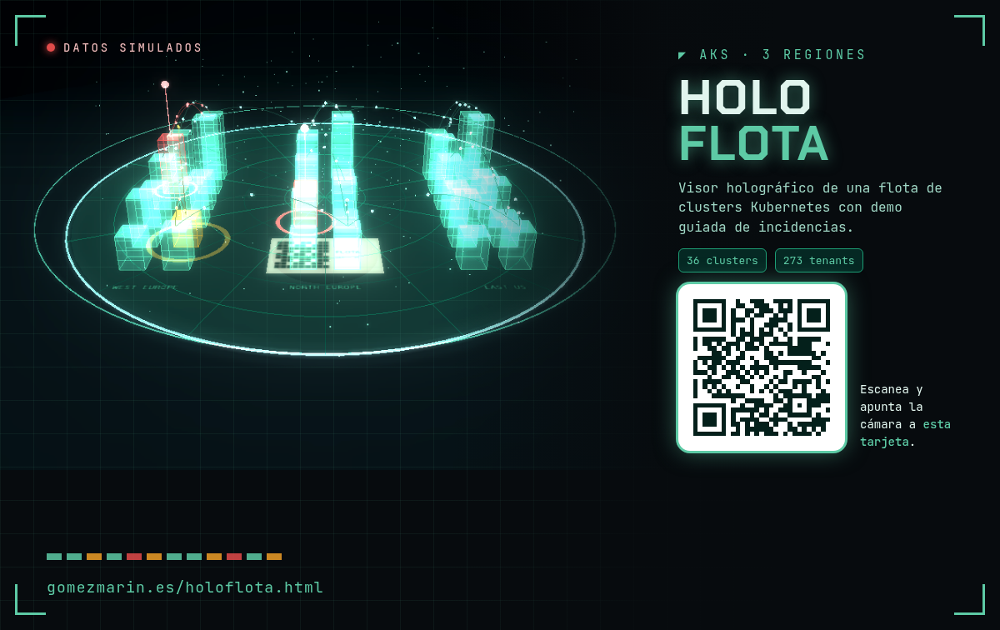

📷 Realidad aumentada
Apunta la cámara del móvil a esta tarjeta y la flota aparecerá encima, en 3D.

Imprímela o ábrela en otra pantalla (abrir tarjeta). La cámara solo se usa en este navegador; no se envía nada.
Pulsa ▶ Demo para ver una incidencia completa en unos 3 minutos: detección, ticket, PR, despliegue y postmortem.
Arrastra: girar · clic derecho, dos dedos o WASD: moverte · doble clic: volar ahí · H: centrar
Asistente: cargando estado de la flota…